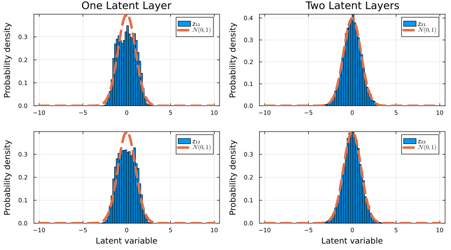

Hierarchical Variational Autoencoders
In their original formulation, Variational Autoencoders (VAEs) feature a latent space whose dimensions typically differ from those of the real data space. The primary objective when training a VAE is to optimize an encoder and decoder pair that enables smooth translation between the data space and the latent space.
Unlike traditional deterministic autoencoders, the core advantage of a VAE lies in its probabilistic framework. By regularizing the latent space against a known prior distribution (such as an isotropic $n$-dimensional Gaussian distribution), the latent space becomes continuous and structured, allowing for efficient and meaningful data generation via direct sampling.
In practice, standard VAEs often face limitations in sample generation quality. They can produce blurry outputs or suffer from posterior collapse, a phenomenon where the decoder completely ignores the latent variables. To capture more complex data distributions and improve fidelity, additional latent layers can be introduced using a hierarchical architecture, known in the literature as Hierarchical VAEs (HVAEs) [4, 5]. In an HVAE, the generative process flows from the top layer downward: the top-most latent layer $z_L$ is unconditional and drawn from a standard isotropic normal prior, $p(z_L) = \mathcal{N}(0, I)$, while all subsequent lower latent layers $z_1, \dots, z_{L - 1}$ are conditional distributions dependent on the latent variables of the layers above them $p(z_1 \mid z_2), \dots, p(z_{L-1} \mid z_L)$.
Example 2D Distribution
This module provides fully built-in support for hierarchical latents. For example, consider the following two-dimensional training data
function make_data(num_samples)
t = (2.0*π) .* rand(Float64,num_samples)
x_noise = 0.05 .* randn(Float64,num_samples)
y_noise = 0.05 .* randn(Float64,num_samples)
x = cos.(1.0.*t) .+ x_noise
y = sin.(2.0.*t) .+ y_noise
return x, y
end
num_samples = 5000
x_train, y_train = make_data(num_samples)
train_data = collect(transpose(hcat(x_train,y_train)))we can train two VAE models with one and two latent layers respectively with
L = [1, 2]
models = [GenerativeModelProtocols.VariationalAutoencoder(2, 2, l) for l in L]
protocols = [GenerativeModelProtocol(model, train_data;
batchsize = 256,
epochs = 3500,
optimiser = Adam(; eta = 1.0E-4, beta = (0.95,0.999)),
device = cpu_device()
) for model in models]
for i in eachindex(protocols)
train!(protocols[i]; β = 0.1)
endand finally we can make synthetic data with both trained models with
synthetic_data = [protocol(num_samples) for protocol in protocols] from which we can observe that the HVAE with two latent layers visibly outperforms the single latent layer vanilla VAE.
from which we can observe that the HVAE with two latent layers visibly outperforms the single latent layer vanilla VAE.
Latent Variables Comparison
Likewise, we can also compare the distribution of the latent variables, of the last latent layers, to see how closely they resemble a isotropic normal distribution
x_test, y_test = make_data(10000)
test_data = collect(transpose(hcat(x_test,y_test)))
z_test_data_1 = GenerativeModelProtocols.encode(protocols[1],test_data)
z_test_data_2 = GenerativeModelProtocols.encode(protocols[2],test_data)
from which we can easily see that our HVAE with two latent layers, once again, visibly outperforms our vanilla VAE with one latent layer.Source code
The scripts used to create and train the HVAEs, and to produce all the plots shown in this page are included in the examples folder of this module.
cd /path/to/GenerativeModelProtocols.jl/examples/hierarchical_vaes
julia hvae_example.jl